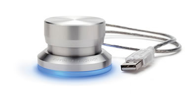

Photoshop gadget
zondag 16 november 2003 | Nerdisme
Tijdens de voorstelling van de Creative Suite tijdens de Adobe Expo Dagen gebruikte de Photoshop wizard van dienst een beestig coole tool om zijn brushes onder controle te houden. Door te draaien aan een lichtblauw verlichte USB knop koos hij een grotere of kleinere brush, door hem zachtjes in te drukken verhardde of verzachtte hij de randen. Samen met zijn Wacom Tablet leek het alsof hij echt aan het schilderen was. Zo natuurlijk!
De Griffin PowerMate kan echter veel meer dan dat. Gebruik het voor te schuiven door video timelines of Flash bestanden, mute het geluid van de PC in één beweging, luider stiller, scrollen in Excel… maar het mooiste blijft voor mij de toepassing in Photoshop. Voor de prijs hoef je het niet te laten. Het ding ziet er bovendien erg sexy uit ;-)

Wouter Demuynck op 17 november 2003
Je hebt er een gekocht? ;-)